A research paper turns your work into knowledge that others can check, trust and build on.
Many engineers solve problems that nobody solved before, but the solutions stay in internal reports and code. This guide shows how to turn such work into a research paper, from the first idea to responsible publication. It is based on a session that I prepared and presented on 27 February 2026.
A story to begin
Think of a research paper as a bridge. On one side is your desk, with a result that only you know. On the other side is a whole field of people who could use it. Follow one engineer across that bridge, and note the questions on the way.
An odd result
You test a tool at work, and it fails in a way that nobody expected. You investigate, and your fix works better than the usual approach. A colleague says that it deserves a paper.
The doubt
A paper takes months. Your work already succeeds without one.
The map of venues
You find conferences, journals, workshops and book series, each with different rules and timelines.
A research paper is a formal document that addresses a real technical problem in a standard, rigorous format. It does not stand alone. It reviews the studies that came before it and gives them credit through citations. On that base, it proposes something new, such as a solution, an improvement or a new perspective on the problem.
Its claims rest on evidence, namely data, experiments, analysis or mathematical proof. Experts in the field evaluate it before acceptance. This peer review protects the quality of published work. Finally, it shares the findings, so that the community can build on them.
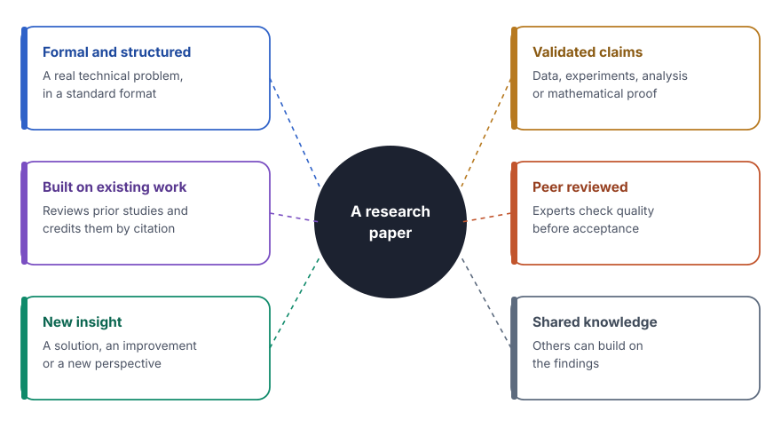
Blogs and books aim at expression and education, and patents aim at legal protection. A research paper has a different focus, namely the systematic advance of knowledge.
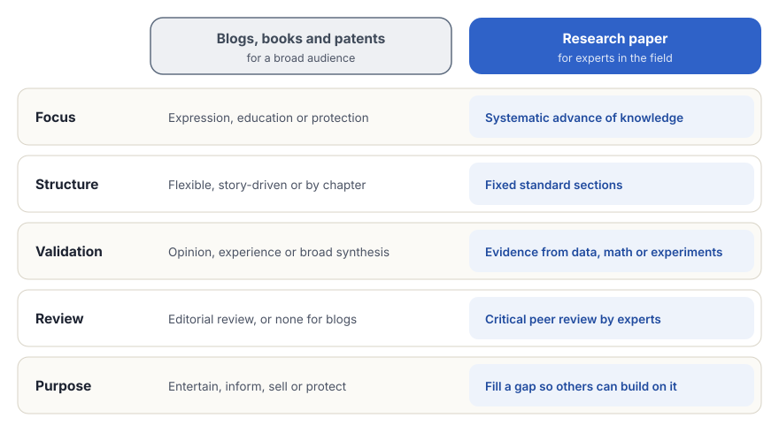
- Structure. Blogs and books are flexible, story-driven or arranged in chapters, and they vary with the style of the author. A paper follows a fixed standard, with an introduction, methods, results and a discussion.
- Validation. Blogs and books rest on opinion, experience or a broad synthesis, and verification is optional. In a paper, every claim needs proof from data, mathematics or experiments.
- Review. Books receive an editorial review for style and fit, and blogs often receive no review at all. Experts evaluate a paper critically for novelty and correctness.
- Purpose. Blogs and books entertain, inform broadly or sell. Patents protect an invention legally. A paper fills a specific gap in knowledge and enables others to build on it.
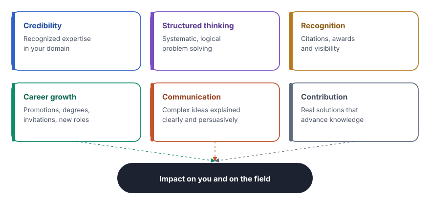
- Professional credibility. A paper shows deep technical knowledge and establishes the author as a trusted expert in the domain.
- Structured thinking. Writing trains the ability to approach complex problems systematically, logically and analytically.
- Recognition and impact. Citations and awards bring visibility, and the work influences the wider community.
- Career growth. Publications open doors to promotions, advanced degrees, speaking invitations and new jobs.
- Communication skills. A paper teaches the art of explaining complex technical concepts clearly, concisely and persuasively.
- A contribution to society. Meaningful solutions to real problems advance collective human knowledge.
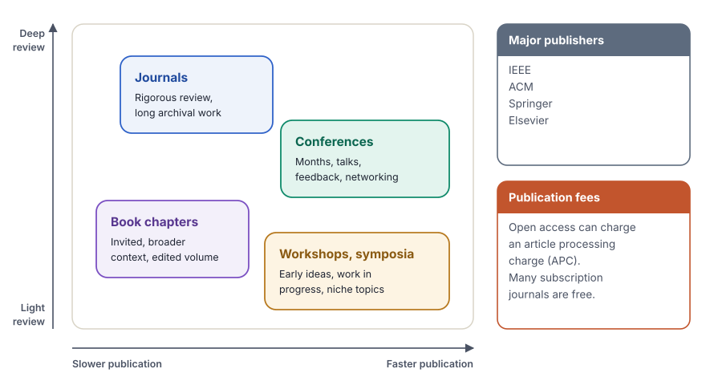
- Conferences. Faster publication cycles, measured in months. They also offer live feedback, presentations and networking.
- Journals. Deep, rigorous peer review. They suit longer, detailed articles of archival quality.
- Workshops and symposia. Ideal for early-stage ideas, work in progress and specific niche topics.
- Book chapters. Invited contributions that give broader context in edited volumes or collections.
- Major publishers. Reputable homes for technical research include the Institute of Electrical and Electronics Engineers (IEEE), the Association for Computing Machinery (ACM), Springer and Elsevier.
- Publication fees. Some venues charge an article processing charge (APC) for open access, while many subscription journals are free for authors.
Before submission, check that a recognized database such as Scopus or Web of Science indexes the venue. Also check that its scope matches the topic of the paper. A mismatch in scope is a common reason for a quick rejection, even for good work.
Research starts with curiosity. A question about an odd result or an unsolved problem leads to a gap, and the gap leads to a hypothesis that you can test.
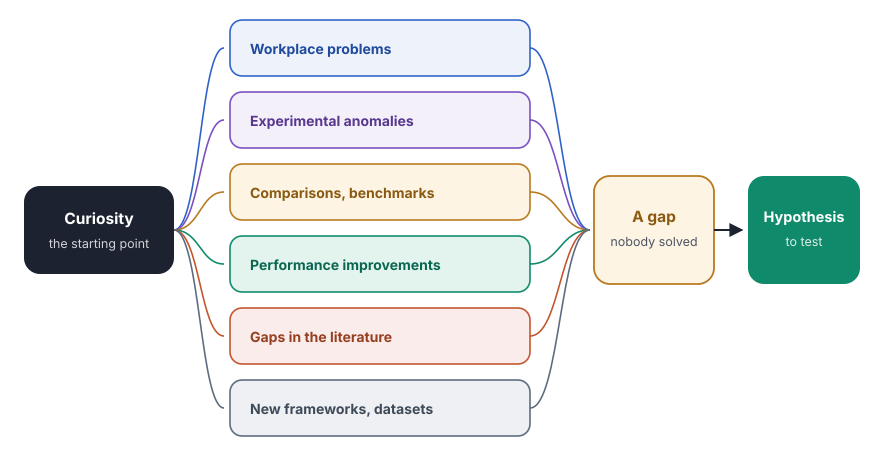
- Workplace problems. Challenges in daily engineering tasks or business processes often reveal real gaps.
- Experimental anomalies. Unexpected results or failures during testing can lead to new discoveries when someone investigates them.
- Comparisons and benchmarks. A systematic comparison of technologies or tools shows their trade-offs and efficiency.
- Performance improvements. Engineers can optimize existing systems for speed, cost, reliability or user experience.
- Gaps in the literature. Current studies can miss, ignore or contradict something important.
- New frameworks. Novel architectures, methods or datasets can solve complex problems.
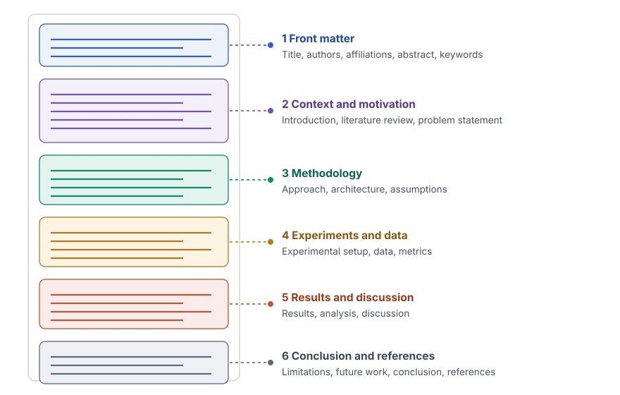
- Front matter. The title, the authors, the affiliations, the abstract and the keywords.
- Context and motivation. The introduction, the literature review and the problem statement.
- Methodology. The approach, the architecture and the assumptions.
- Experiments and data. The experimental setup, if there is one, the data and the metrics.
- Results and discussion. The results, their analysis and the discussion.
- Conclusion and references. The limitations, future work, the conclusion and the references.
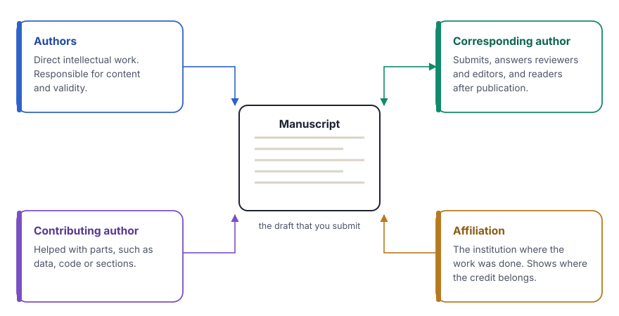
- Authors. The people who made significant, direct intellectual contributions to the work. They are responsible for the content and the validity of the paper.
- Contributing author. A co-author who helped with specific parts, such as data analysis, code or some sections, but who possibly did not lead the whole project.
- Corresponding author. The main contact. This person handles the submission, communicates with reviewers and editors, and answers questions from readers after publication.
- Affiliation. The institution, university or company where the authors worked when they did the research. It shows where the credit for the work belongs.
- Manuscript. The draft of the paper before publication, that is, the document submitted to a journal or a conference for peer review.
- Abstract. A concise summary, usually of 150 to 250 words, of the problem, the method, the key results and the conclusions. It helps readers decide if the paper is relevant for them.
- Keywords. Three to six specific terms that index the paper in databases. The right keywords help the right audience find the work.
- Citation and reference. A citation is the marker in the text, for example [1]. A reference is the full detail of the source, listed at the end of the paper.
- Bibliography. A list of all material consulted during the research, even if not directly cited. Most research papers need only a References section.
- Digital Object Identifier (DOI). A unique, permanent string of letters and numbers assigned to a digital document, so that the link to the paper never breaks.
- Peer review. The quality control in which experts in the field evaluate the work for validity, novelty and clarity before it is accepted for publication.
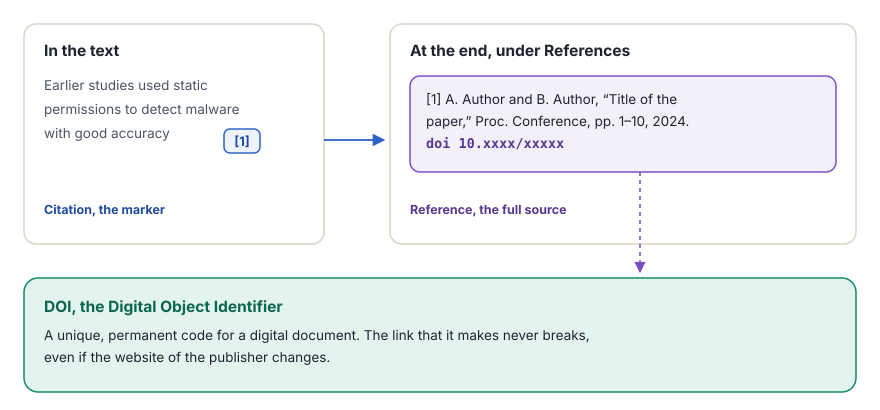
A simple structure for the abstract. Write one or two sentences for each of four parts. First the problem and its importance, then the approach, then the main result with a number, and last the impact or conclusion. Write the abstract last, when the results are final.
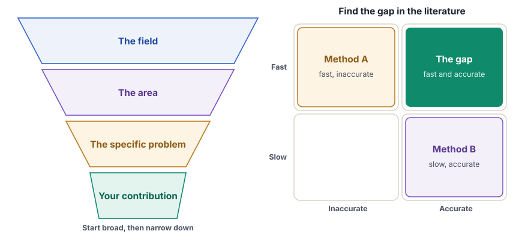
The introduction
- Build the context. Start broad with the field, then narrow down to the specific problem. Explain why it matters now.
- State the stakes. Describe the consequence if nobody solves the problem, and the reason that current progress is not enough.
- Define the goals. List the contributions clearly, for example with "In this paper, we propose...".
The last paragraph of the introduction outlines the structure of the paper.
The literature review
- Search systematically. Do not just list papers. Group them by method, period or theme.
- Analyze critically. Identify the gaps, for example "Method A is fast but inaccurate, and Method B is accurate but slow."
- Synthesize. Connect the findings and show how the work fills the specific gap that the review identified.
The literature review takes the most time of all phases, so keep detailed notes from the start.
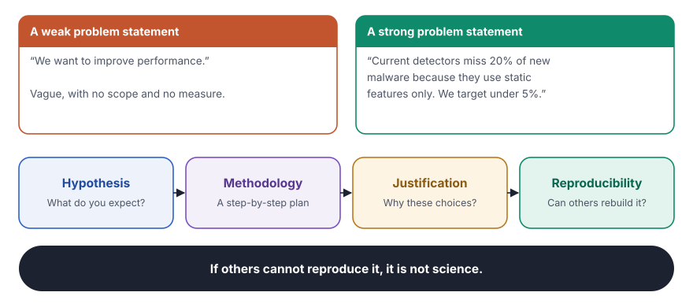
Defining the problem
- Identify the gap. State clearly what existing solutions cannot do, for example "Current methods are slow or inaccurate because...".
- Write a precise problem statement. Keep it scoped and measurable. Avoid vague claims such as "we want to improve performance".
- State the hypothesis. Say what you expect to find, and state the research questions clearly.
A well-defined problem is half solved. Be specific.
Explaining the approach
- Methodology. Give a step-by-step plan, and explain the architecture, the algorithms or the process flow.
- Justification. Defend each choice, such as the dataset and the parameters.
- Reproducibility. Give enough detail so that another engineer can rebuild the work from scratch.
The golden rule is simple. If others cannot reproduce the work, it is not science.
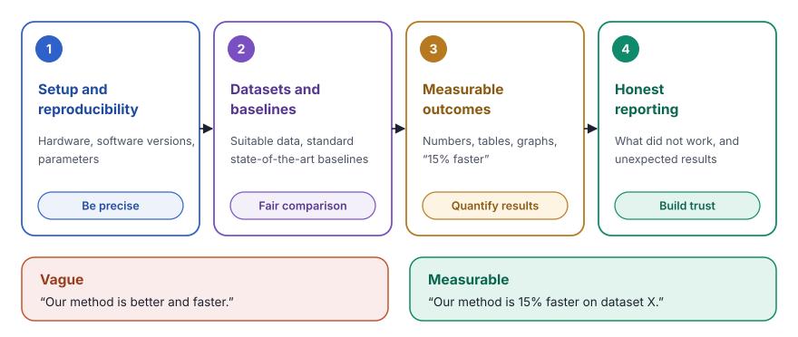
- Setup and reproducibility (be precise). Describe the experimental setup in detail, with the hardware, the software versions and the parameters. Another person must be able to repeat the experiment and get the same results.
- Datasets and baselines (fair comparison). Explain why the test data is suitable. Compare the results against standard state-of-the-art baselines to show the relative performance.
- Measurable outcomes (quantify the results). Avoid vague claims such as "better" or "faster". Use concrete numbers, tables and graphs. Quantify each improvement, for example "15% faster processing".
- Honest reporting (build trust). Report also what did not work. Failed attempts and unexpected results add credibility and help others avoid dead ends.
Transparency is the golden rule of research. If the results are good only under very specific, hidden conditions, the research is weak.
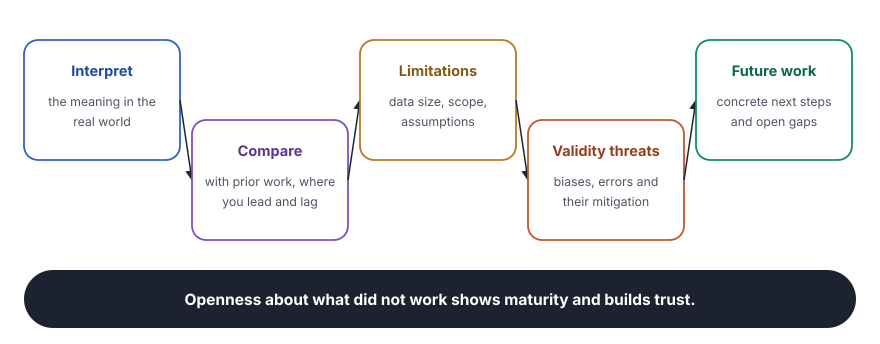
- Interpret the findings. Explain what the results mean in the real world. Do not only list numbers. Explain the reasons and the mechanisms behind them.
- Compare with prior work. Place the work in context. Show where the approach performs better than existing methods and where it falls behind.
- Acknowledge the limitations. Be honest about constraints such as the size of the dataset, the scope or specific assumptions. Perfection is not required, but honesty is.
- Address threats to validity. Explain possible biases or errors in the study and the steps taken to reduce them.
- Suggest future work. Propose concrete next steps, such as the experiments that others can run and the gaps that remain open.
- Embrace transparency. Open discussion of what did not work shows research maturity and builds trust in the contribution.
Common reasons for rejection. Reviewers often reject a paper for a contribution that is not new or an evaluation without fair baselines. Other reasons are claims that the data does not support, a scope that does not match the venue and poor writing or structure. Each part of this guide addresses one of these reasons.
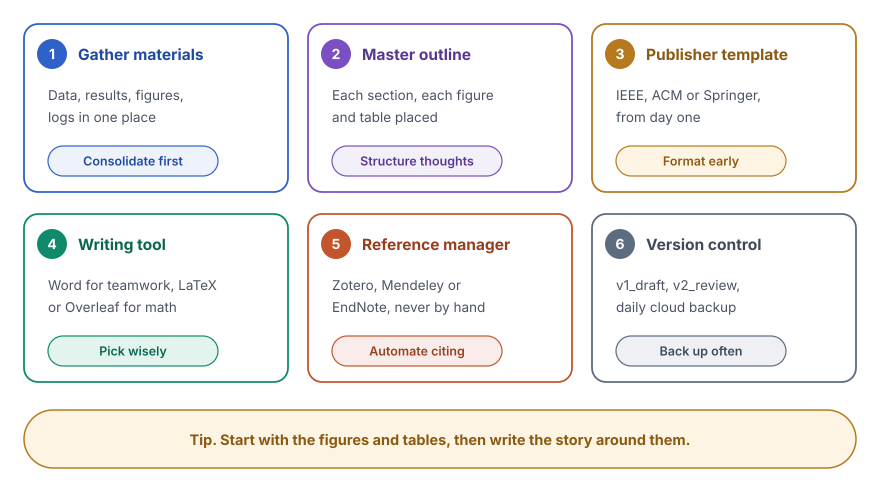
- Gather the materials (consolidate first). Collect all raw data, processed results, figures, logs and notes in one central place. Do not start to write until the evidence is ready.
- Create a master outline (structure the thoughts). Draft a bulleted outline for every section. Decide exactly where each figure and table goes before you write a single paragraph.
- Use the publisher template (format early). Download the official template, for example from IEEE, ACM or Springer, at once. Writing directly in the correct format saves hours of reformatting later.
- Choose the tools (pick wisely). Microsoft Word is easier for collaboration. LaTeX or Overleaf is better for mathematics and professional typesetting. Choose one and keep it.
- Manage the references (automate citing). Use a tool such as Zotero, Mendeley or EndNote. Never type citations by hand, because it causes errors and makes a change of style tedious.
- Control the versions (back up often). Save versions systematically, for example v1_draft and v2_review, and back up the work daily to cloud storage such as Google Drive or GitHub.
Start with the figures and the tables. The whole story of the paper can often grow around the visual results.
Replies to reviewers. Thank the reviewers, then answer every comment in order. Quote the comment, describe the change and give its location in the revised paper. When you disagree, explain the reason politely, with evidence.
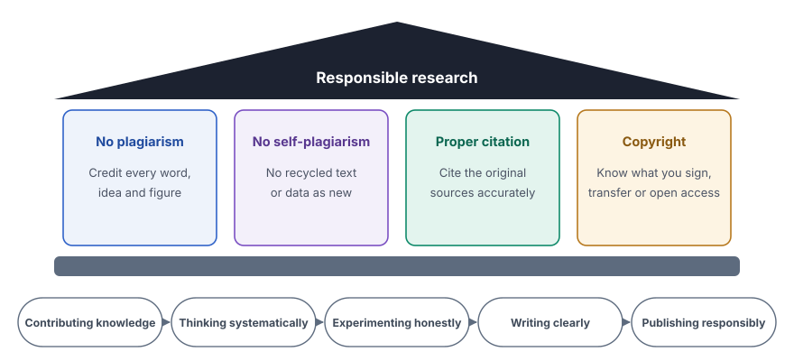
- No plagiarism. Never use the words, ideas or figures of others without clear credit. Plagiarism destroys credibility and can end careers.
- No self-plagiarism. Do not recycle your own published text or data as new. Each paper must offer a new contribution.
- Proper citation. Cite the original sources accurately. It shows respect for the community and proves that you did your homework.
- Copyright and terms. Understand what you sign. Know the difference between a transfer of copyright to a publisher and an open access license.
Research is more than the writing of papers. It is a chain of five habits, namely contributing knowledge, thinking systematically, experimenting honestly, writing clearly and publishing responsibly.
Today, we are inspired by the work of others. Tomorrow, our work may inspire someone else.
My takeaways
- A paper is a contribution, not a report. It fills a specific gap and lets others build on the result.
- Ideas come from daily work. Odd results, slow systems and missing comparisons are all starting points for research.
- A precise problem is half the solution. Scope it, make it measurable and state the hypothesis.
- Evidence carries the claims. Fair baselines, concrete numbers and honest reports of failure build trust.
- Reproducibility is the test of science. Another engineer must be able to rebuild the work from the paper alone.
- Preparation is most of the work. Materials, outline, template, tools, references and versions come before the first paragraph.
- Ethics comes first. Credit every source, never recycle old work as new and understand what you sign.
Writing the paper, a decision guide
Two flowcharts bring the guide together. The first selects a venue. The second checks a draft before submission, and every failed check names the part that helps.
Choosing a venue
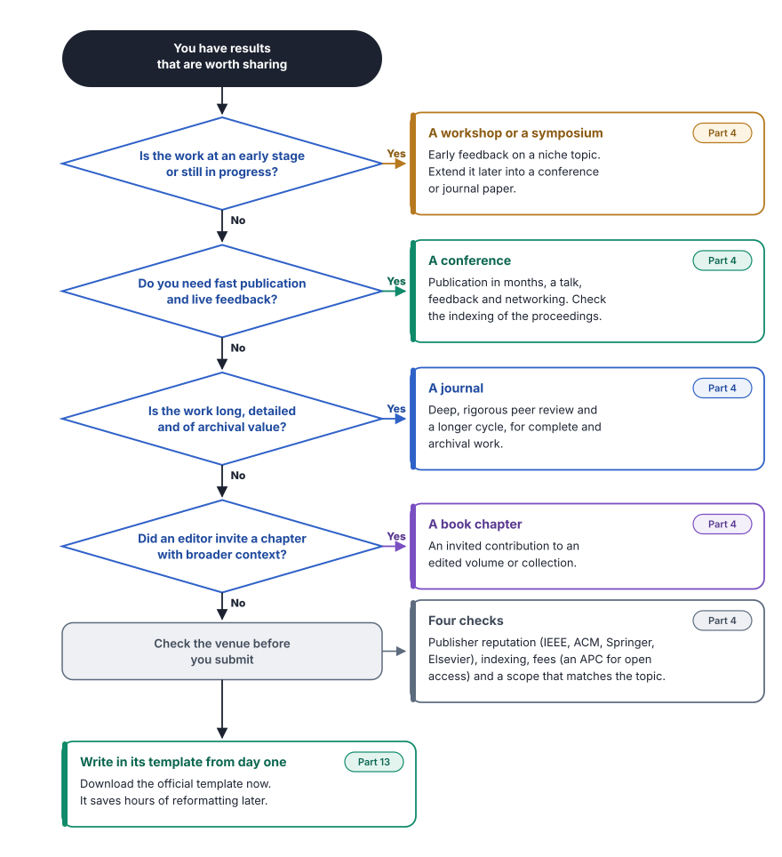
Readiness check before submission
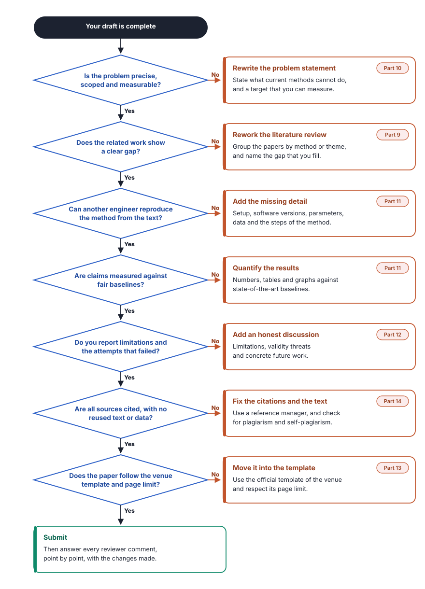
The whole guide on one page
The basics
- A paper is formal, built on prior work, new, validated, peer reviewed and shared.
- Unlike blogs, books and patents, it must prove its claims to experts.
- It brings credibility, structured thinking, recognition, career growth, communication skills and a contribution to society.
Ideas and venues
- Ideas come from workplace problems, anomalies, benchmarks, improvements, literature gaps and new frameworks.
- Conferences are fast, journals are deep, workshops suit early work and book chapters are invited.
- Open access can carry an APC.
Structure and terms
- Six blocks, from the front matter to the conclusion and references.
- Authors, contributing authors, the corresponding author and the affiliation.
- Abstract, keywords, citation, reference, bibliography, DOI and peer review.
Writing the core
- The introduction narrows from the field to the contribution.
- The literature review groups, criticizes and synthesizes.
- The problem is precise and measurable, and the method is reproducible.
- Results use fair baselines and concrete numbers, and report failures honestly.
Discussion and preparation
- Interpret, compare, admit limitations, address validity and suggest future work.
- Gather, outline, use the template, pick tools, manage references and keep versions.
Ethics
- No plagiarism, no self-plagiarism, proper citation and an understanding of copyright.
- Contribute, think, experiment, write and publish responsibly.
Check your learning
Select a question to reveal the answer.
A blog post explains a new technique well but has no experiments. Is it a research paper?
No. A research paper must validate its claims with data, experiments, analysis or proof. It also passes peer review (Parts 1 and 2).
Your work is at an early stage, and you want feedback from experts. Which venue fits best?
A workshop or a symposium, which suits early ideas and work in progress (Part 4).
A venue for open access asks for a fee. What is this fee called?
An article processing charge (APC). Many subscription journals do not charge authors (Part 4).
An unexpected failure appears during testing. Can it start a research idea?
Yes. Experimental anomalies, once investigated, often lead to new discoveries (Part 5).
In which block of a paper do the abstract and the keywords appear?
In the front matter, with the title, the authors and the affiliations (Part 6).
Who answers the reviewers and the editors during submission?
The corresponding author, who also answers questions from readers after publication (Part 7).
The marker [1] in the text and the full source at the end have different names. What are they?
The marker is a citation, and the full source detail is a reference (Part 8).
A literature review lists twenty papers one after another. What is missing?
Grouping by method, period or theme, a critical analysis of the gaps, and a synthesis that shows how the work fills one gap (Part 9).
Is "we want to improve performance" a good problem statement?
No. It is vague. A good statement is precise, scoped and measurable. It says what current methods cannot do (Part 10).
Your method works only on one special dataset, and the paper does not say so. Where is the problem?
Transparency. Results that are good only under hidden conditions make the research weak. Report the conditions and the limitations (Parts 11 and 12).
Why download the publisher template before writing?
Writing directly in the correct format saves hours of reformatting later (Part 13).
You reuse a full section of your earlier paper in a new paper without a note. Is that acceptable?
No. It is self-plagiarism. Each paper must offer a new contribution, and the author must cite the earlier work (Part 14).
Key terms
| Term | Meaning |
|---|---|
| Abstract | A summary of 150 to 250 words of the problem, the method, the results and the conclusions. |
| Affiliation | The institution where the authors did the work. |
| Article processing charge (APC) | A fee that some open access venues charge for publication. |
| Baseline | A standard method that new results are compared against. |
| Bibliography | All material consulted, even if not cited. |
| Citation | The marker in the text that points to a source, for example [1]. |
| Corresponding author | The main contact for editors, reviewers and readers. |
| Digital Object Identifier (DOI) | A permanent identifier that keeps the link to a paper working. |
| Hypothesis | The expected answer to a research question, stated before the test. |
| Keywords | Three to six terms that index the paper in databases. |
| Manuscript | The draft of a paper before publication. |
| Open access | Publication that anybody can read without a subscription. |
| Peer review | Evaluation by experts for validity, novelty and clarity before acceptance. |
| Reference | The full detail of a source, listed at the end of the paper. |
| Reproducibility | The ability of others to repeat the work and get the same results. |
| Self-plagiarism | The reuse of your own published text or data as if it were new. |
| Threat to validity | A possible bias or error that can weaken the conclusions. |
My published research
A Hybrid Machine Learning Approach for Detection of Malicious Android Apps
Proceedings of the Sixth International Conference on Advances in Computer Engineering and Communication Systems (ICACECS 2025), Volume 1. Smart Innovation, Systems and Technologies (SIST), volume 488, Springer.
- ICACECS 2025
- Springer
- SIST 488
- Scopus-indexed series
Abstract
With the rapid proliferation of mobile platforms, particularly Android, smart-phones have become integral to critical domains such as banking, education, health, e-commerce etc. This widespread adoption, however, has also made mobile devices attractive targets for malware attacks. Detecting such attacks is increasingly complex due to the varied levels of access permissions granted to applications, as well as the diverse metadata that must be analyzed across app environments. To address these challenges, we propose a hybrid Machine Learning (ML)-based system capable of detecting malicious Android applications on both mobile end through light weight model and server end through comprehensive model. By leveraging curated datasets, comprehensive feature sets, and advanced ML algorithms, the proposed model aims to enhance detection accuracy while minimizing false positives. The mobile-end model facilitates lightweight, real-time detection and transmits selected APKs to the server-end for in-depth analysis, enabling a comprehensive threat report using richer feature sets. Together, these components form a scalable and adaptive security framework contributing to a more resilient and secure mobile ecosystem.
- Android security
- Malware Detection
- Machine Learning (ML)
- Hybrid Model
- Mobile-end Analysis
- Server-end Analysis
- Lightweight ML Model
Thank you for reading. I hope this guide helps you turn your ideas into meaningful research contributions. Keep exploring, keep questioning and keep publishing.